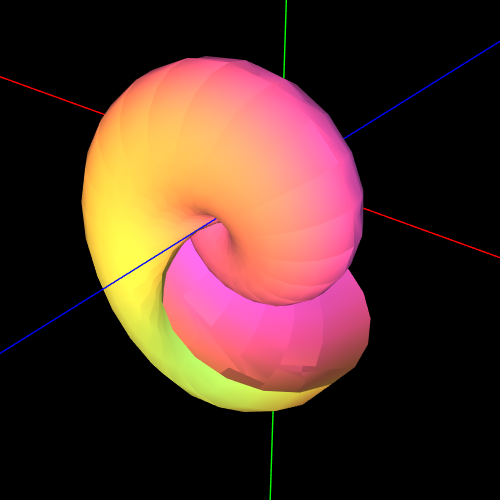
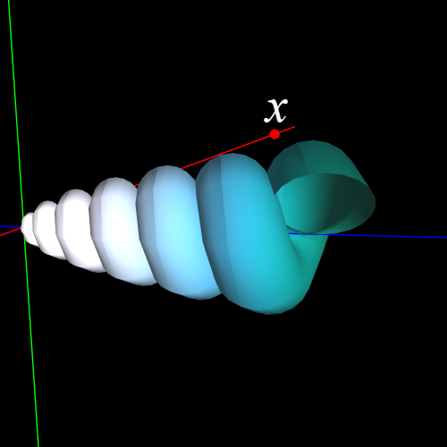
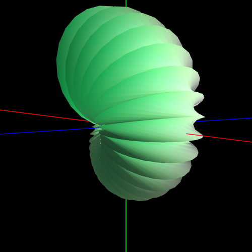
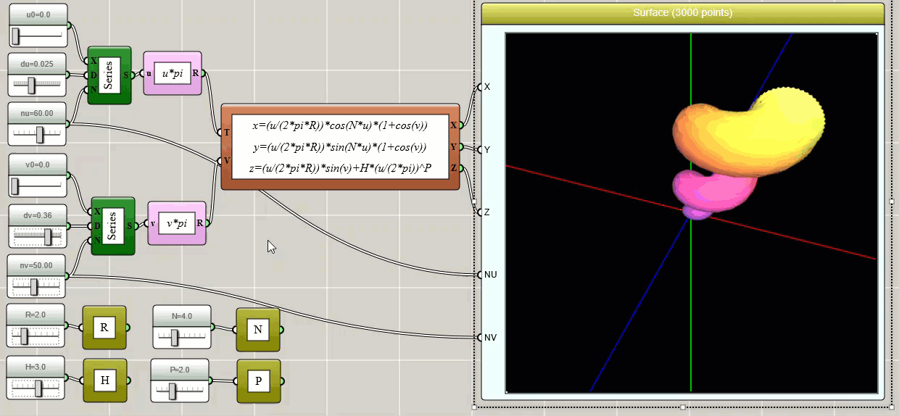

How to Draw a Beautiful Seashell with iFlow?
By Charles Xie ✉
Listen to a podcast about this article
A parametric surface is a 3D surface defined by a set of parametric equations with two parameters, usually denoted as u and v. iFlow can be used to draw any parametric surface. In this article, we show you how to draw a seashell like the following images using this visual computational tool.



A seashell surface is a surface made by a circle which spirals up the z-axis while decreasing its own radius and distance from the z-axis. It can be defined parametrically as:
x = [u/(2πR)]cos(Nu)[1+cos(v)]
y = [u/(2πR)]sin(Nu)[1+cos(v)]
z = [u/(2πR)]sin(v)+H[u/(2π)]P
where R is the radius, N is the number of turns, H is the height, and P is the power. You can adjust these parameters to make different types of seashells such as a nautilus.
With iFlow, you can use a Parametric Equation block in conjunction with a Surface3D block (do not confuse this with a Space3D block that is more suitable for drawing lines) to create visual code that can generate the seashell surface. You can also use global variables to allow users to adjust the control parameters such that the shape can be varied. An implementation is shown in the image below.

Click HERE to play with the above example
A Surface3D block only takes data inputs. It does not know anything about math. So we have to produce the data with some visual code. We use two Series block to generate the u and v arrays over a range. As always, we use three sliders to control the starting point (u0 or v0), the step (du or dv), and the total number of points (nu or nv) for each array. We then pass the two arrays to a Parametric Equation block as the inputs. The outputs of the block are then fed to the X, Y, and Z ports of the Surface3D block. Internally, the Parametric Equation block automatically uses the two input arrays to generate a mesh with nu × nv points. In this way, we do not have to write our own nested loops to do the job (but we do have to understand how a surface is represented in terms of data). In order for the Surface3D block to know about nv and nv (otherwise it will not be able to draw the surface correctly), we must also connect these two parameters to the corresponding ports of the Surface3D block. Note that the more points we export to the Surface3D block, the smoother the seashell would look, but the downside is that it takes longer time to render the surface with more points.
After all these are done, we are rewarded with a beautiful seashell in the Surface3D window. And we can adjust the parameters to change its shape. Enjoy the computational beauty of nature!